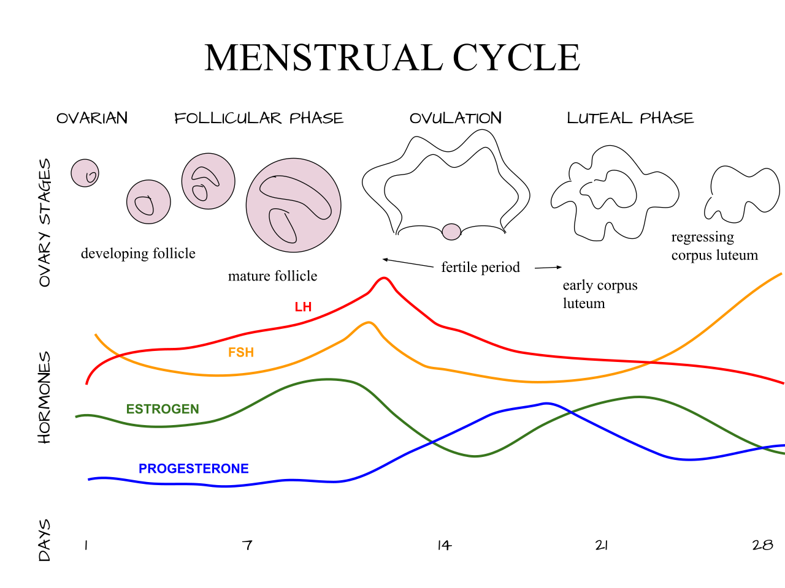

Vì Sao Giáo Án Tập Luyện Tuyến Tính Truyền Thống Bỏ Quên Sinh Lý Nữ Giới?
Suốt nhiều thập kỷ, các giáo trình khoa học thể thao và chương trình tập gym đều được xây dựng dựa trên một giả định đơn giản: mọi ngày trong tháng đều bắt đầu từ một nền tảng nội tiết giống hệt nhau. Mô hình tuyến tính này hoạt động khá hiệu quả với sinh lý nam giới (nơi nồng độ Testosterone lặp lại theo chu kỳ 24 giờ mỗi ngày), nhưng với vận động viên và phụ nữ năng động, cơ thể trải qua sự biến thiên nồng độ Estradiol gấp 10 lần và Progesterone tăng vọt gấp 25 lần chỉ trong vòng một tháng.
Như Tiến sĩ sinh lý học thể thao Stacy Sims (cố vấn khoa học cho tính năng WHOOP Menstrual Cycle Coaching) từng khẳng định trong câu nói nổi tiếng: "Phụ nữ không phải là những người đàn ông thu nhỏ." Khi bạn ép cơ thể tập luyện với khối lượng nặng và cường độ cao ở Tuần 4 của chu kỳ giống hệt như Tuần 2—bất chấp cảnh báo từ chỉ số HRV, Nhịp tim lúc nghỉ (RHR) và nhiệt độ da trên đồng hồ—bạn đang làm tăng nguy cơ quá tải thần kinh, tăng vọt hormone căng thẳng Cortisol, rối loạn giấc ngủ và Hội chứng thiếu hụt năng lượng tương đối trong thể thao (RED-S).

Nghiên Cứu Khoa Học Thể Thao Đột Phá: Tập Sức Mạnh Ở Pha Nang Trứng So Với Pha Hoàng Thể
Liệu việc sắp xếp lịch tập tạ theo các pha của chu kỳ kinh nguyệt có thực sự giúp tăng cơ và sức mạnh vượt trội hơn? Hai công trình nghiên cứu lâm sàng trọng điểm đã chứng minh điều đó:
- Lợi Thế Tăng Cơ Ở Pha Nang Trứng (Sung et al., SpringerPlus 2014 & Wikström-Frisén et al., 2017): Các nhà khoa học đã tiến hành thử nghiệm đối chứng, trong đó phụ nữ tập luyện một bên chân chủ yếu vào Pha Nang trứng (tập tần suất cao ở Tuần 1–2, giảm tải ở Tuần 3–4) và chân còn lại tập chủ yếu vào Pha Hoàng thể (tập nhẹ ở Tuần 1–2, tập nặng ở Tuần 3–4) suốt 3 chu kỳ liên tiếp. - Kết quả ấn tượng: Nhóm tập sức mạnh tập trung vào Pha Nang trứng đạt mức tăng lực co cơ tứ đầu đùi tối đa cao hơn vượt trội (+42% so với +17%), đường kính mặt cắt ngang sợi cơ lớn hơn và mật độ nhân tế bào cơ cao hơn hẳn so với tập nặng ở Pha Hoàng thể!
- Vì Sao Estrogen Có Tính Đồng Hóa (Xây Dựng) Còn Progesterone Có Tính Dị Hóa (Phân Giải)?
- Estradiol (Thống trị Pha Nang trứng): Kích hoạt tế bào vệ tinh cơ xương, tăng độ nhạy Insulin, đẩy nhanh tốc độ nạp Glycogen vào cơ và hoạt động như một chất chống oxy hóa tự nhiên giúp giảm đau nhức cơ khởi phát muộn (DOMS) sau tập.
- Progesterone (Thống trị Pha Hoàng thể): Làm tăng quá trình oxy hóa axit amin và dị hóa protein (khiến cơ thể cần nhiều đạm hơn chỉ để giữ cơ), làm tăng nhiệt độ lõi thêm
+0.3°C đến +0.5°C, đồng thời làm giảm khoảng ~8% thể tích huyết tương trong máu.
Phác Đồ Tập Luyện & Dinh Dưỡng Đồng Bộ 4 Giai Đoạn Chu Kỳ
Hãy kết hợp màn hình Chu kỳ (Cycle Insights) cùng Điểm Sẵn sàng / Phục hồi (Readiness / Recovery Score) mỗi sáng trên đồng hồ để điều chỉnh tải tập luyện và dinh dưỡng:
| Giai Đoạn Chu Kỳ | Chỉ Số Thiết Bị Đeo & Sinh Trắc Học | Trọng Tâm Tập Luyện Tối Ưu | Chiến Lược Dinh Dưỡng Trước & Sau Tập |
|---|---|---|---|
| 1. Đầu Kỳ Kinh (Ngày 1 – 2) |
Nhiệt độ: Hạ về đường nền HRV: Bắt đầu bật tăng Triệu chứng: Đỉnh Prostaglandin gây co thắt |
Giải Tỏa Thần Kinh & Linh Hoạt Khớp: Đi bộ Zone 1–2, Pilates, giãn cơ Mobility hoặc tập tạ kỹ thuật vừa phải nếu không đau bụng. | Bổ Sung Sắt & Kháng Viêm: Sắt Heme (thịt bò nạc, cá mòi) hoặc đậu lăng kèm Vitamin C; bổ sung Omega-3 và trà gừng ấm giảm co thắt. |
| 2. Cuối Kỳ Kinh & Pha Nang Trứng (Ngày 3 – 13) |
Nhiệt độ: Mát và ổn định nhất RHR: Thấp nhất tháng HRV: Cao nhất tháng |
Tập Tạ Nặng, Tăng Cơ (Hypertrophy) & HIIT: Tăng tải lũy tiến (75%–90% 1RM), các bài Compound đa khớp, chạy nước rút ngắt quãng. |
Nạp Tinh Bột Hiệu Suất Cao: Độ nhạy Insulin cực tốt giúp cơ bắp hấp thu nhanh tinh bột phức hợp (30–50g trước tập) và phục hồi thần tốc. |
| 3. Cửa Sổ Rụng Trứng (Ngày 13 – 16) |
Nhiệt độ: Điểm chuyển giao HRV: Duy trì mức cao Hormone: Đỉnh Estrogen + Testosterone |
Bùng Nổ Sức Mạnh & Phá Kỷ Lục (PR): Kiểm tra mức tạ tối đa (1RM), chạy Tempo tốc độ cao. Lưu ý: Khởi động kỹ khớp gối và cơ mông! |
Cân Bằng Nước & Phục Hồi: Duy trì nguồn tinh bột dồi dào và nạp 20–30g đạm giàu Leucine ngay sau buổi tập nặng. |
| 4. Giữa Đến Cuối Pha Hoàng Thể (Ngày 19 – 28) |
Nhiệt độ: +0.3°C đến +0.5°CRHR: +3 đến +7 bpmHRV: −5% đến −15% |
Cardio Bền Bỉ Zone 2 & Giảm Tải (Deload): Chạy bộ/đạp xe nhịp tim ổn định, tập tạ mức trung bình (65%–75% 1RM), tránh tập quá sức trong môi trường nóng. |
Tăng Đạm & Điện Giải: Nâng mức đạm lên 1.8–2.2 g/kg thể trọng; ăn nhẹ 30–40g carb trước tập và tăng gấp đôi lượng Natri/Magie. |
Lưu Ý Dây Chằng Chéo Trước (ACL) Khi Rụng Trứng: Bảo Vệ Khớp Gối Ở Đỉnh Estrogen
Mặc dù đỉnh Estrogen quanh Ngày 12 đến Ngày 15 mang lại sự hưng phấn thần kinh – cơ tuyệt vời, các nghiên cứu y học thể thao chỉnh hình (Herzberg et al., 2017) đã chỉ ra một sự đánh đổi cơ sinh học quan trọng: nồng độ Estradiol đạt đỉnh tạm thời ức chế liên kết ngang của sợi collagen, làm tăng độ lỏng lẻo của dây chằng chéo trước (ACL) ở khớp gối. - Nữ vận động viên có nguy cơ đứt dây chằng ACL không do va chạm cao gấp 3 đến 6 lần nam giới, và tỷ lệ chấn thương tập trung cao nhất vào cuối pha Nang trứng và cửa sổ Rụng trứng. - Cách tập an toàn: Bạn không cần phải nghỉ tập tạ nặng khi rụng trứng! Thay vào đó, hãy dành thêm 5 phút khởi động kích hoạt cơ mông nhỡ (Glute Medius), cơ đùi sau (Hamstrings) và kiểm soát trục đầu gối trước khi thực hiện các bài bật nhảy (Plyometrics) hoặc đổi hướng tốc độ cao.
Giải Mã Thiết Bị Đeo: Vì Sao Nhịp Tim Khi Chạy Bộ Lại Cao Hơn Ở Pha Hoàng Thể?
Bạn đã bao giờ chạy đúng cự ly 5 km với tốc độ quen thuộc vào Ngày 23 của chu kỳ, nhìn xuống đồng hồ và thấy nhịp tim vọt lên Zone 4 (168 bpm) trong khi ở Tuần 2 tốc độ đó chỉ nằm ở Zone 2 (152 bpm) chưa?
Đây là những gì đang diễn ra bên trong hệ tim mạch của bạn: 1. Nhiệt Độ Lõi Tăng Cao (+0.4°C): Do Progesterone đẩy nhiệt độ nền lên cao, cơ thể chạm ngưỡng đổ mồ hôi và giãn mạch sớm hơn khi vận động, buộc tim phải bơm nhiều máu hơn ra dưới da để làm mát. 2. Thể Tích Huyết Tương Giảm Nhẹ (~8%): Hormone pha Hoàng thể làm dịch chuyển một phần nước từ lòng mạch ra khoảng gian bào (gây cảm giác hơi tích nước trước kỳ kinh). Khi lượng máu bơm đi trong mỗi nhát bóp (Stroke Volume) giảm nhẹ, tim phải đập nhanh hơn 5 đến 10 nhịp/phút để cung cấp đủ oxy cho cơ bắp (Hiện tượng trôi nhịp tim — Cardiac Drift). 3. Cảm Nhận Gắng Sức (RPE) Cao Hơn: Phân tích tổng hợp trên Sports Medicine (McNulty et al., 2020) xác nhận các bài tập sức bền trong điều kiện nhiệt độ cao luôn tạo cảm giác mệt hơn ở nửa cuối pha Hoàng thể.
4 Bước Hành Động Để Đồng Bộ Lịch Tập Với Đồng Hồ Của Bạn
- Áp Dụng Chu Kỳ Tập "3 Tuần Tăng Tải / 1 Tuần Giảm Tải (Deload)": Hãy thiết kế giáo án hàng tháng sao cho Tuần 1, Tuần 2 và đầu Tuần 3 (từ Ngày 3 kỳ kinh đến Ngày 18 đầu pha Hoàng thể) là giai đoạn tăng tạ và cường độ, còn Tuần 4 (cuối pha Hoàng thể, Ngày 21–28) trở thành tuần giảm tải (Deload) tự nhiên để rèn kỹ thuật và phục hồi!
- Không Tập Cường Độ Cao Khi Bụng Rỗng Ở Pha Hoàng Thể: Tập HIIT hoặc nâng tạ nặng khi nhịn ăn sáng ở Pha Hoàng thể sẽ làm tăng vọt Cortisol và thúc đẩy dị hóa cơ bắp. Hãy nạp nhẹ
25–30g tinh bột dễ tiêu + 15g đạmtrước buổi tập 30–60 phút. - Đạt Ngưỡng Leucine Ngay Sau Khi Tập Tạ: Đặc biệt trong pha Hoàng thể có tính dị hóa cao, hãy bổ sung 30 đến 40 gram protein chất lượng cao (cung cấp ít nhất
3g axit amin Leucine) trong vòng 30–45 phút sau buổi tập để kích hoạt tổng hợp cơ bắp. - Lắng Nghe Chỉ Số HRV Hàng Ngày Thay Vì Máy Móc Theo Lịch: Đồng bộ chu kỳ là kim chỉ nam, không phải chiếc lồng giam. Nếu bạn thức dậy vào Ngày 24 của chu kỳ với Điểm Phục Hồi Xanh 88% và cơ thể tràn đầy năng lượng, hãy tự tin tập luyện! Ngược lại, nếu Ngày 10 bạn bị thiếu ngủ và HRV sụt giảm, hãy linh hoạt giảm tải.
Tài Liệu Tham Khảo & Nguồn Y Khoa
- Sung, E., Han, A., Hinrichs, T., Vorgerd, M., Manchado, C., & Platen, P. (2014). Effects of follicular versus luteal phase-based strength training in young women. SpringerPlus, 3(1), 668. https://pubmed.ncbi.nlm.nih.gov/25525569/
- McNulty, K. L., Elliott-Sale, K. J., Dolan, E., Swinton, P. A., Ansdell, P., Goodall, S., ... & Hicks, K. M. (2020). The Effects of Menstrual Cycle Phase on Exercise Performance in Eumenorrheic Women: A Systematic Review and Meta-Analysis. Sports Medicine, 50(10), 1813–1827. https://pubmed.ncbi.nlm.nih.gov/32661839/
- Herzberg, S. D., Motu'apuaka, M. L., Lambert, W., Fu, R., Brady, J., & Guise, J. M. (2017). The Effect of Menstrual Cycle and Contraceptives on ACL Injuries and Laxity: A Systematic Review and Meta-analysis. Orthopaedic Journal of Sports Medicine, 5(7), 2325967117718781. https://pubmed.ncbi.nlm.nih.gov/28795075/
- WHOOP The Locker (with Dr. Stacy Sims). Menstrual Cycle Coaching: Training & Recovery Across Your Cycle Phases. https://www.whoop.com/us/en/thelocker/menstrual-cycle-coaching/